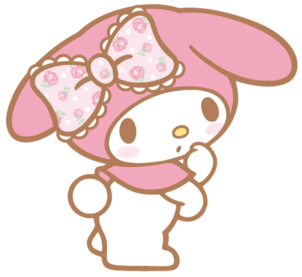
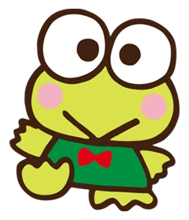

Hello world!
Vesper Carney-Demmon is based in Santa Cruz, CA. She is a third year in CRES and FMST. They study radical queer aesthetics and the liberatory potential of visual and performing arts, music, and fashion.
annalivia martin-straw is a game developer and illustrator based in Los Angeles, CA. she likes legend of zelda lore, jpop idols, and magical girls. She makes games about cute girls. you can play them at itch.io/stargyaru
Questions: 1) how do you do specific fonts, whats the difference between like a font and a font family 2) Why is some of the stuff in CSS crossed out 3)